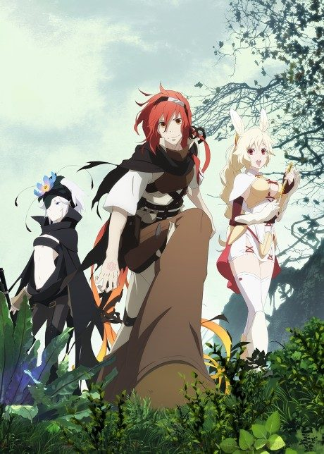
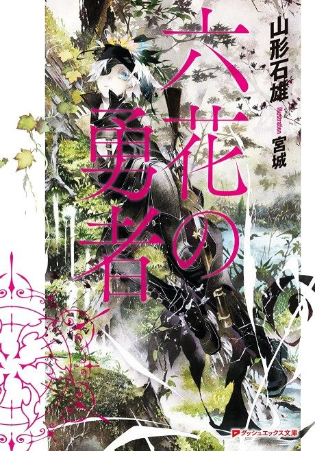
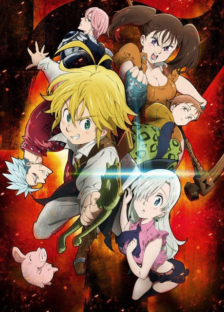
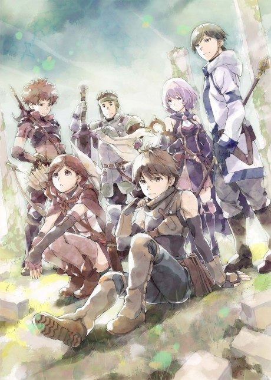
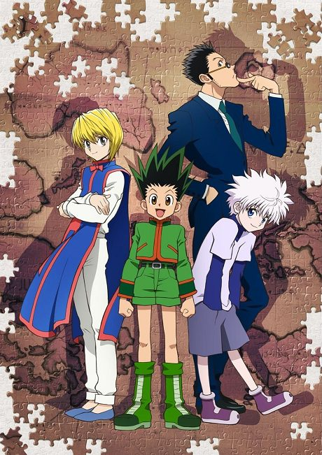
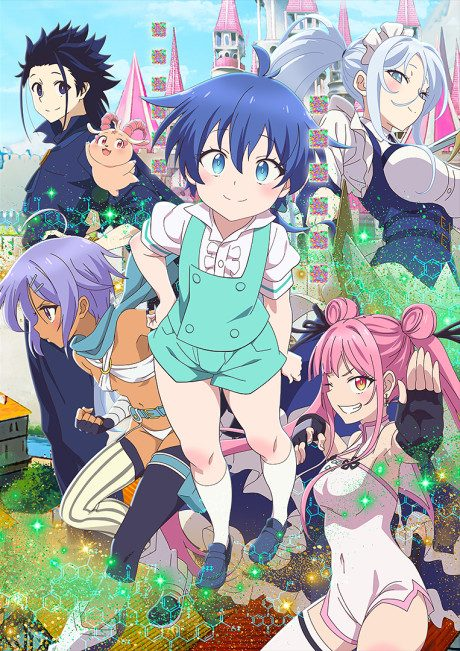
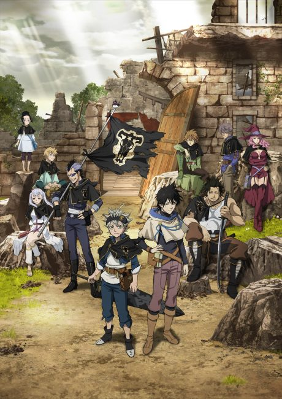
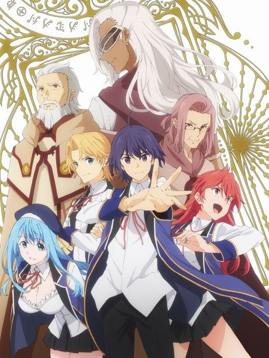

After the anime, read the light novel from Volume 2.
The anime adapts all of light novel volume 1, so start at volume 2. The light novel has been on hiatus since volume 6, which ends on a cliffhanger.





